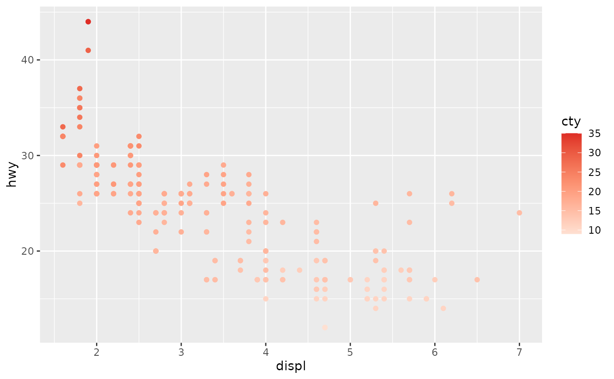
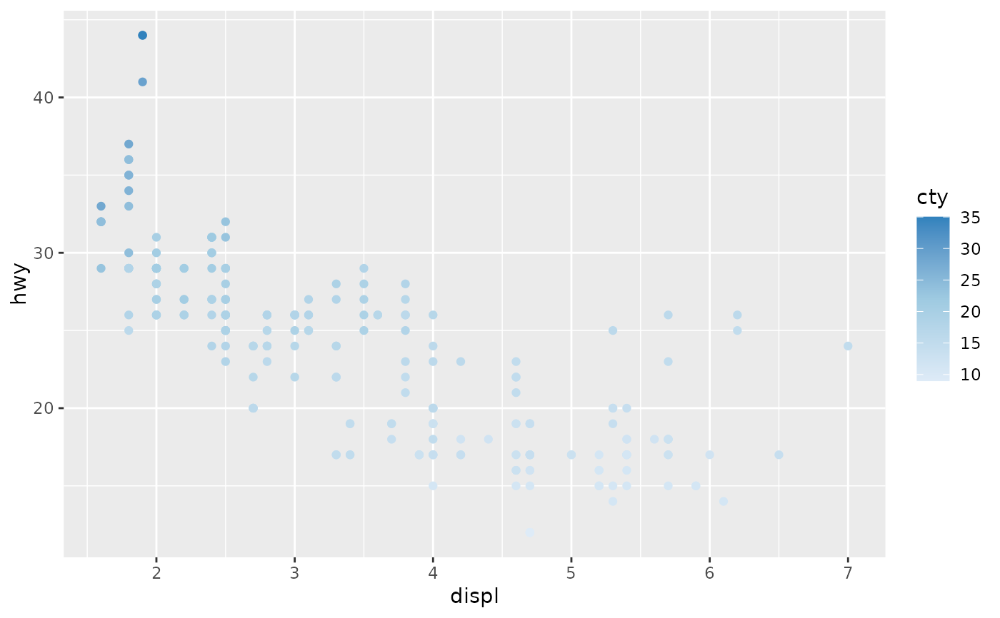
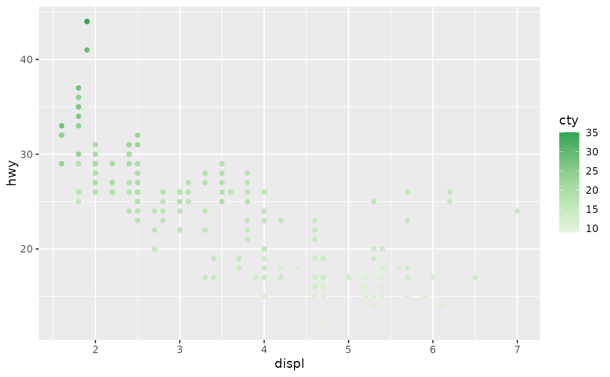
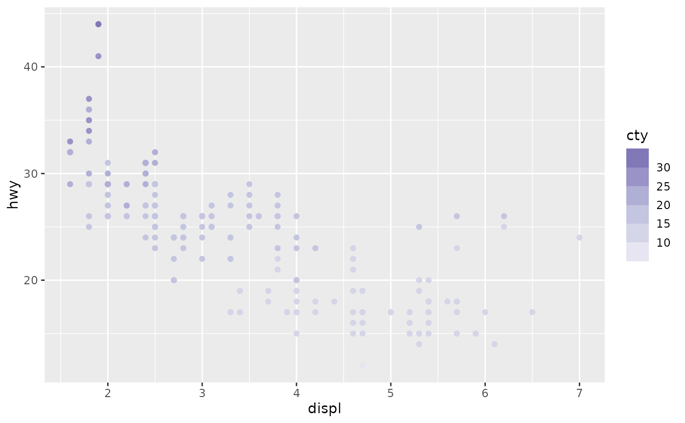
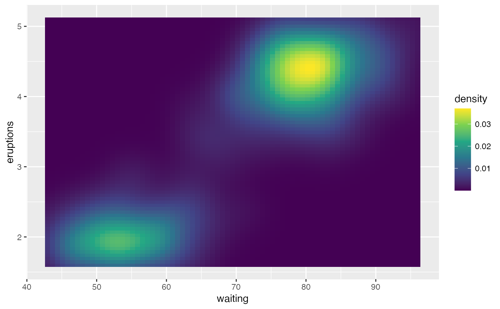
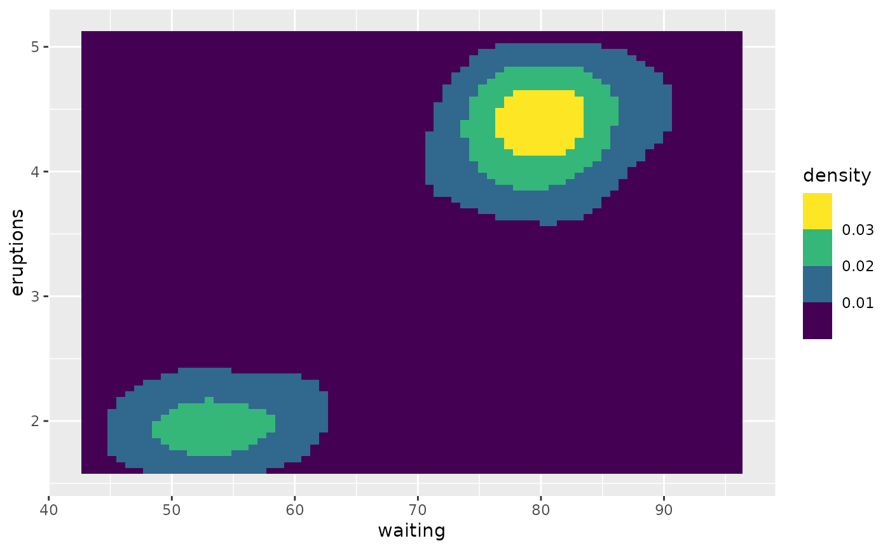
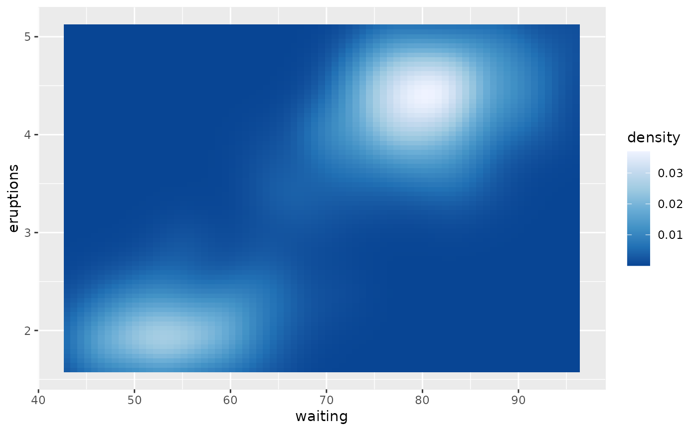

The scales scale_colour_continuous() and scale_fill_continuous() are
the default colour scales ggplot2 uses when continuous data values are
mapped onto the colour or fill aesthetics, respectively. The scales
scale_colour_binned() and scale_fill_binned() are equivalent scale
functions that assign discrete color bins to the continuous values
instead of using a continuous color spectrum.
scale_colour_continuous(..., type = getOption("ggplot2.continuous.colour")) scale_fill_continuous(..., type = getOption("ggplot2.continuous.fill")) scale_colour_binned(..., type = getOption("ggplot2.binned.colour")) scale_fill_binned(..., type = getOption("ggplot2.binned.fill"))
| ... | Additional parameters passed on to the scale type |
|---|---|
| type | One of the following:
|
All these colour scales use the options() mechanism to determine
default settings. Continuous colour scales default to the values of the
ggplot2.continuous.colour and ggplot2.continuous.fill options, and
binned colour scales default to the values of the ggplot2.binned.colour
and ggplot2.binned.fill options. These option values default to
"gradient", which means that the scale functions actually used are
scale_colour_gradient()/scale_fill_gradient() for continuous scales and
scale_colour_steps()/scale_fill_steps() for binned scales.
Alternative option values are "viridis" or a different scale function.
See description of the type argument for details.
Note that the binned colour scales will use the settings of
ggplot2.continuous.colour and ggplot2.continuous.fill as fallback,
respectively, if ggplot2.binned.colour or ggplot2.binned.fill are
not set.
These scale functions are meant to provide simple defaults. If
you want to manually set the colors of a scale, consider using
scale_colour_gradient() or scale_colour_steps().
Many color palettes derived from RGB combinations (like the "rainbow" color
palette) are not suitable to support all viewers, especially those with
color vision deficiencies. Using viridis type, which is perceptually
uniform in both colour and black-and-white display is an easy option to
ensure good perceptive properties of your visulizations.
The colorspace package offers functionalities
to generate color palettes with good perceptive properties,
to analyse a given color palette, like emulating color blindness,
and to modify a given color palette for better perceptivity.
For more information on color vision deficiencies and suitable color choices see the paper on the colorspace package and references therein.
scale_colour_gradient(), scale_colour_viridis_c(),
scale_colour_steps(), scale_colour_viridis_b(), scale_fill_gradient(),
scale_fill_viridis_c(), scale_fill_steps(), and scale_fill_viridis_b()
Other colour scales:
scale_alpha(),
scale_colour_brewer(),
scale_colour_gradient(),
scale_colour_grey(),
scale_colour_hue(),
scale_colour_steps(),
scale_colour_viridis_d()
v + scale_fill_continuous(type = "gradient")v + scale_fill_continuous(type = "viridis")# To make a binned version of this plot v + scale_fill_binned(type = "viridis")# Set a different default scale using the options # mechanism tmp <- getOption("ggplot2.continuous.fill") # store current setting options(ggplot2.continuous.fill = scale_fill_distiller) v